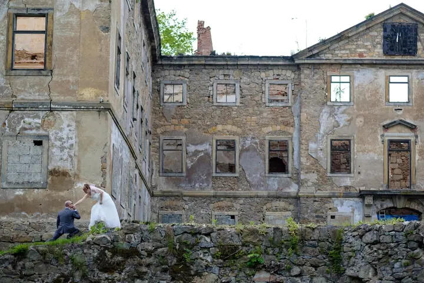
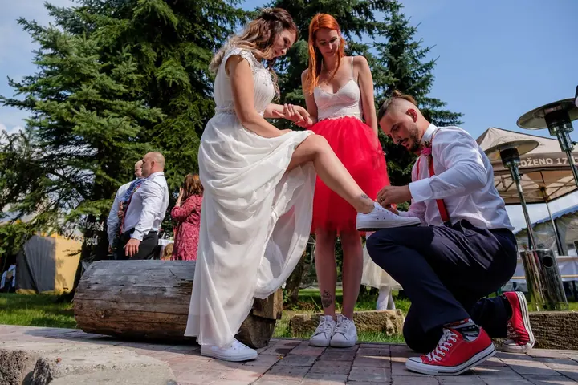

jedna
Svatební fotografie
Fotím celý svatební den od příprav přes obřad až po večerní tanec. Nejdřív se spolu sejdeme na předsvatební schůzce, kde probereme plán svatby a vaše představy.


Jmenuji se Martin Motl a fotím svatby v Rumburku a okolí. Nejradši mám chvíle, kdy se zapomenete smát a svatba se odehrává sama. Když se vám moje práce líbí, rád si s vámi sednu nad plánem vašeho dne.
Více o mně
Co fotím
jedna
Fotím celý svatební den od příprav přes obřad až po večerní tanec. Nejdřív se spolu sejdeme na předsvatební schůzce, kde probereme plán svatby a vaše představy.
Váš den, tak jak opravdu byl.


Za objektivem
Jmenuji se Martin Motl a fotím svatby pod značkou fotomotl. Zázemí mám v Rumburku. Pokud hledáte svatebního fotografa a líbí se vám moje práce, jste tady správně.
Svatbu fotím po celý den: od nervózních chvil před obřadem přes prstýnky a gratulace až po večerní tanec pod lampiony. Nechávám věci plynout a nezasahuji víc, než je potřeba. Proto na fotkách najdete i to, co se nedá naplánovat, třeba Dartha Vadera mezi hosty.
Ještě před svatbou se spolu sejdeme. Probereme plán dne, vaše představy a podepíšeme smlouvu, abyste měli jistotu a v den svatby se mohli věnovat jen sobě a svým blízkým.
Martin
Napište mi přes formulář nebo zavolejte a pošlete termín a místo svatby. Ověřím, jestli mám volno.
Sejdeme se, probereme plán svatby a vaše představy. Na schůzce také podepíšeme svatební smlouvu.
Jsem s vámi od příprav přes obřad až po zábavu. Fotím nenápadně a jen chvílemi vás vezmu stranou na společné fotky.
Vyberu a upravím nejlepší snímky z celého dne a předám vám je, abyste si svatbu mohli kdykoli připomenout.
Portfolio
Fotografie jsou ilustrační
Otázky
Napište mi termín a místo svatby. Když mám volno, domluvíme si předsvatební schůzku, kde podepíšeme svatební smlouvu a termín je váš.
Projdeme spolu plán dne, vaše představy i místa, kde se bude fotit. V den svatby pak oba víme, co nás čeká, a nic nás nezaskočí.
Zázemí mám v Rumburku. Pokud se berete jinde, napište mi a domluvíme se.
Ne. Většinu dne fotím nenápadně a nechávám věci plynout. Na společné fotky si vás vezmu jen na chvíli, abyste nepřišli o vlastní svatbu.
Napište pár vět o tom, co si představujete. · +420 775 187 204